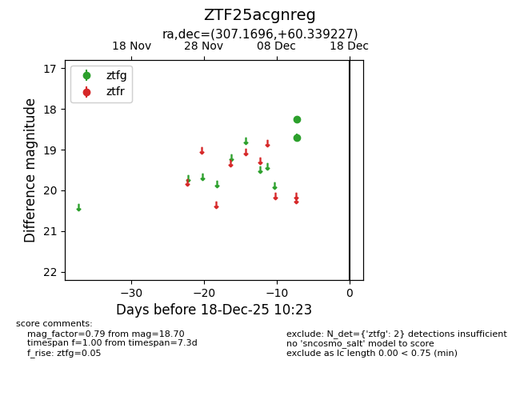
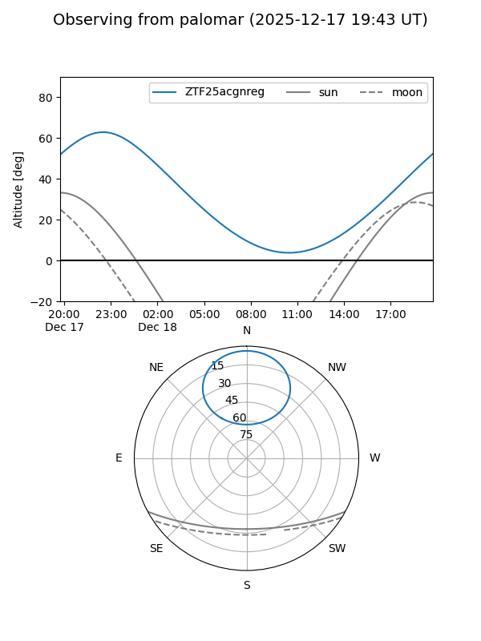

ZTF25acgnreg
Target ZTF25acgnreg at 2025-12-18 11:17
Aliases and brokers:
FINK: fink-portal.org/ZTF25acgnreg
Lasair: lasair-ztf.lsst.ac.uk/objects/ZTF25acgnreg
ALeRCE: alerce.online/object/ZTF25acgnreg
alt names
ZTF25acgnreg (ztf,fink_ztf)
Coordinates:
equatorial (ra, dec) = 307.1696,+60.33923
equatorial (HMS+DMS) = 20:28:40.71,+60:20:21.22
galactic (l, b) = (95.4302,+12.41112)
Photometry
last ztfg=18.70
2 ztfg detections
Lightcurve

Visibility


Additional plots